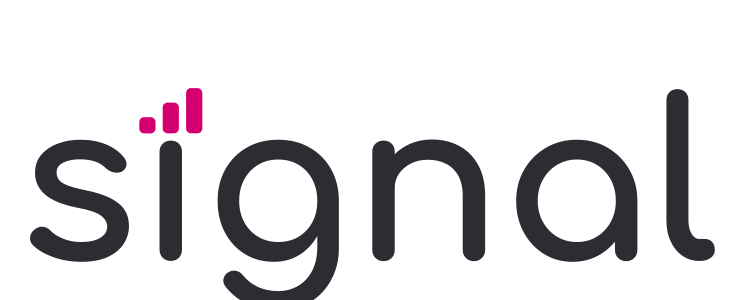
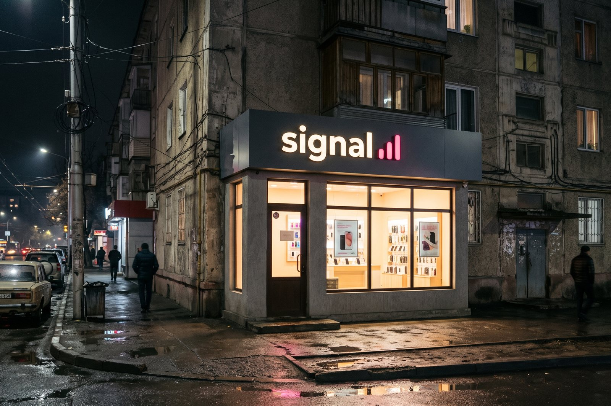
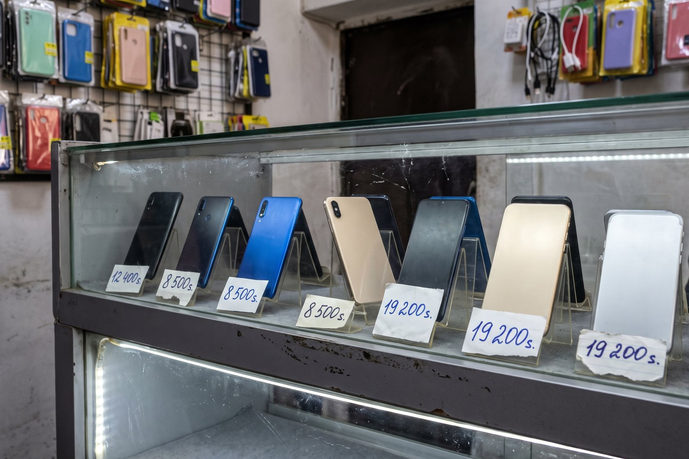
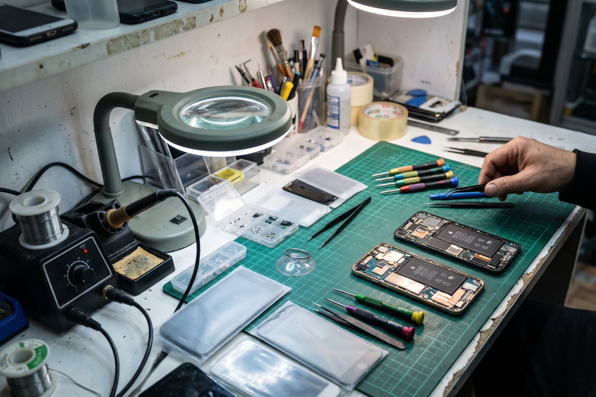

Signal
Новые цены с 1 октября. Смартфон от 1 100 сом, рассрочка на 6 месяцев без первого взноса по ID-карте.
♥ 61 · Comment · Share
Phones, TV and appliances with a receipt and a one-year guarantee.
Dual SIM, Attelkom and Torgoy
0% over 3 or 6 months through Tulpar, in every Signal.
6 or 12 months, no first payment, with your ID card. 15 minutes at the till.
Новые цены с 1 октября. Смартфон от 1 100 сом, рассрочка на 6 месяцев без первого взноса по ID-карте.
♥ 61 · Comment · ShareDual SIM, Attelkom and Torgoy
0% over 3 or 6 months through Tulpar, in every Signal.
6 or 12 months, no first payment, with your ID card. 15 minutes at the till.
Signal ✓СигналSignal ✓СигналSignal ✓СигналSignal ✓СигналSignal ✓СигналSignal ✓СигналSignal ✓СигналSignal ✓СигналSignal ✓СигналSignal ✓СигналSignal ✓СигналSignal ✓СигналSignal ✓СигналSignal ✓СигналSignal ✓СигналSignal ✓СигналSignal ✓СигналSignal ✓СигналSignal ✓СигналSignal ✓СигналSignal ✓СигналSignal ✓СигналНовые цены с 1 октября. Смартфон от 1 100 сом, рассрочка на 6 месяцев без первого взноса по ID-карте.
♥ 61 · Comment · ShareBölüp tölöö in every Signal: 0% over 3 or 6 months through Tulpar.
♥ 22 · Comment · ShareДороже, чем на Радиобазаре, но с гарантией. Рассрочку оформили за 15 минут.

A Signal shop front at night
Phones on the counter, with price cards
The Signal service centreSignal, since 2003: phones, televisions and appliances with a receipt and a one-year guarantee, and Attelkom and Torgoy SIM cards. Pay in instalments: Ak Bata Bank over 6 or 12 months, or Tulpar Bölüp tölöö at 0% over 3 or 6 months. 27 shops and a service centre in every city.
«Сигнал» с 2003 года: телефоны, телевизоры, бытовая техника с чеком и гарантией на год. Рассрочка через «Ак Бата» и «Бөлүп төлөө».
27 locations on Kartalar: Talas 11, Nurzhan 11, Iyık Janyl 2, Bazar-Korgon 1, Toktogul 1, Kyzyl-Adyr 1.